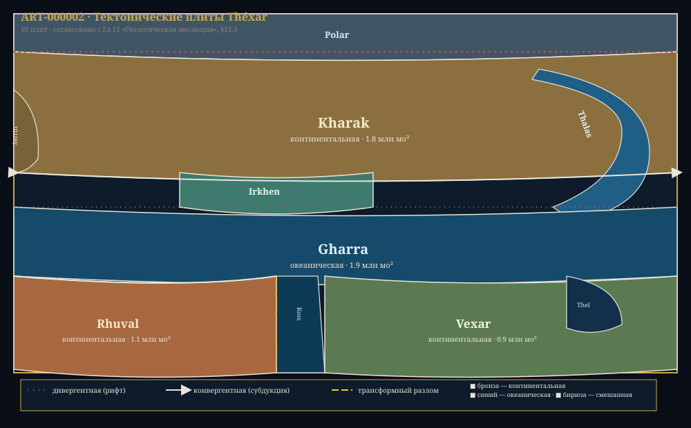
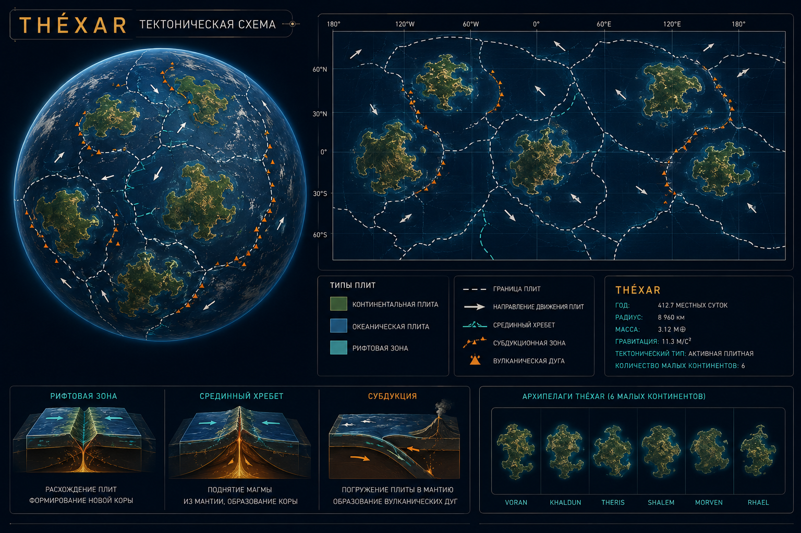

Глава 12: Геологическая эволюция Théxar
«Она не самая большая, не самая богатая, не самая древняя. Но она — единственная, кто нас породила. И другой такой нет во всей галактике.» — Из «Гимна Théxar», классическое произведение эпохи Расцвета
Связанные разделы: → см. [Гл.03, «Планета Théxar»], → см. [Гл.04, «Биохимия»], → см. [Гл.11, «Экология»] Объём: 40 страниц Ключевой принцип: геологическая история Théxar — хроника в 10 этапов, от аккреции планетезималей до современного тектонического режима. Возраст планеты (~6.5 млрд циклов) определил её спокойный и зрелый геологический облик.
Введение
Théxar — третья планета системы Khar'Vex, сформировавшаяся ~6.5 млрд циклов назад. Её геологическая история — это хроника в десять этапов, от аккреции планетезималей до современного тектонического режима. Планета обладает полностью дифференцированным ядром, активной мантией и тектоникой плит — именно эти процессы стали фундаментом, на котором впоследствии возникла жизнь.
С точки зрения планетологии, Théxar имеет ряд ключевых отличий от типичных каменистых планет: более длинные сутки, более старый и спокойный геологический режим, иной состав атмосферы, два небольших спутника вместо одного крупного. Эти черты сформировали уникальную траекторию эволюции местной жизни.
Геологическая эволюция — не просто история камней. Это история атмосферы (тектоника регулирует CO₂), океанов (рельеф дна определяет течения), и в конечном счёте — самой возможности существования цивилизации. Без тектоники плит не было бы магнитного поля, защищающего от космической радиации. Без вулканизма не было бы почв, богатых минералами. Без медленного дрейфа континентов не было бы того разнообразия экосистем, которое мы наблюдаем сегодня.
12.1 Формирование планеты
КЛЮЧЕВОЙ ФАКТ
Процесс формирования Théxar занял около 500 млн циклов и завершился ~6.0 млрд циклов назад. Протопланетное облако системы Khar'Vex отличалось повышенной металличностью ([Fe/H] = +0.12), что обеспечило ядро планеты богатым запасом тяжёлых элементов.
12.1.1 Аккреция и рост
Формирование Théxar началось с аккреции планетезималей — мелких твёрдых тел, обогащённых железом и никелем. По мере роста протопланеты гравитационное сжатие и радиоактивный распад короткоживущих изотопов (²⁶Al, ⁶⁰Fe) разогрели недра до температуры плавления железа (~875°X). Началась гравитационная дифференциация: расплавленное железо устремилось к центру, формируя ядро, а более лёгкие силикатные породы поднялись к поверхности.
Следующие 70 млн циклов планета переживала интенсивную бомбардировку — остатки протопланетного диска врезались в поверхность, увеличивая массу и выделяя тепловую энергию. К концу этого периода Théxar достигла ~95% современной массы.
ТАБЛИЦА 12.1: Этапы формирования Théxar
Этап Время (млрд циклов назад) Событие Продолжительность 1 6.50 ± 0.02 Аккреция планетезималей, образование прото-Théxar ~20 млн циклов 2 6.48 ± 0.01 Дифференциация ядра: Fe-Ni опускается в центр ~10 млн циклов 3 6.47–6.40 Период интенсивной бомбардировки, рост массы ~70 млн циклов 4 6.40–6.30 Формирование первичной коры, остывание поверхности ~100 млн циклов 5 6.30–6.00 Выделение летучих веществ, первичная атмосфера и океаны ~300 млн циклов 6 6.00–5.50 Первый тектонический цикл, появление протоконтинентов ~500 млн циклов 7 5.50 Формирование крупнейшего ударного бассейна (Море Гхарра) ~1 млн циклов 8 5.50–4.00 Стабилизация коры, переход к современному тектонизму ~1.5 млрд циклов 9 4.00–3.80 Кислородная катастрофа (начало фотосинтеза) ~200 млн циклов 10 3.80–наст. вр. Современный тектонический режим ~3.8 млрд циклов
12.1.2 Ударное событие — Море Гхарра
Особое значение имеет этап 7 — удар крупного тела (диаметром ~102–163 мо), сформировавший бассейн Моря Гхарра. Это столкновение, вероятно, было настолько мощным, что:
- Вызвало частичное расплавление мантии в зоне удара
- Создало асимметрию коры — утончение коры в Южном полушарии
- Повлияло на последующее распределение континентов
- Инициировало первый тектонический цикл
УДАРНЫЙ БАССЕЙН: Море Гхарра
Параметр Значение Диаметр бассейна ~711 мо Глубина ~9.8 ша Возраст 5.5 млрд циклов Последствия Асимметрия коры, три континента
12.1.3 Происхождение воды
Вода на Théxar имеет смешанное происхождение:
- ~60% — дегазация мантии (вулканические выбросы водяного пара)
- ~30% — доставлена ледяными планетезималями из внешней части системы
- ~10% — кометный материал
Повышенная металличность протопланетного облака обеспечила большее количество радиоактивных элементов в коре, что замедлило остывание планеты и продлило период вулканической дегазации. Как следствие — Théxar получила значительный объём «внутренней» воды, что компенсирует несколько меньший размер планеты.
12.2 Внутреннее строение
ПРОФИЛЬ: Внутреннее строение Théxar
Слой Глубина (мо) Температура (°X) Состояние Состав Кора 0–7.1 48.9–386.0 Твёрдое Базальты, граниты, осадочные породы Верхняя мантия 7.1–50.8 386.0–766.7 Твёрдое (пластичное) Перидотит, оливин, пироксен Астеносфера 50.8–91.5 766.7–929.8 Частично расплавленное (~2%) Перидотит + расплав Нижняя мантия 91.5–589.4 929.8–1963 Твёрдое (высокое давление) Перовскит, ферропериклаз Внешнее ядро 589.4–1036.6 1963–2724 Жидкое Fe (85%), Ni (10%), S (5%) Внутреннее ядро 1036.6–1242.3 2724–2942 Твёрдое Fe (90%), Ni (8%), Si (2%)
12.2.1 Кора
Толщина коры Théxar варьирует от 2.4 мо (под океанами) до 9.1 мо (под континентами). Средняя толщина — 7.1 мо. Кора разделяется на два типа:
- Океаническая кора (~2.4–3.7 мо): базальтовый состав, плотность ~2.8 кх/дл³. Формируется в рифтовых зонах, утилизируется в зонах субдукции. Средний возраст — 180 млн циклов.
- Континентальная кора (~6.1–9.1 мо): гранитно-метаморфический состав, плотность ~2.6 кх/дл³. Более старая — ядра континентов датируются 5.5–5.0 млрд циклов.
КЛЮЧЕВОЙ ФАКТ
Континентальная кора Théxar содержит аномально высокую концентрацию тория (Th) — в ~2.5× выше стандартной. Это результат повышенной металличности протопланетного облака. Данный факт имеет колоссальное значение для энергетики цивилизации Xha'Ruun. → см. [Гл.09, «Энергетика»]
12.2.2 Мантия
Мантия Théxar — силикатная оболочка толщиной ~582 мо. Ключевая особенность: температура на границе с ядром ниже на ~109°X из-за меньшего размера планеты и, соответственно, более низкого давления в центре. Это приводит к:
- Меньшей скорости конвекции
- Более крупным конвективным ячейкам
- Более длительному циклу обновления коры
Верхняя часть мантии (астеносфера) — зона частичного плавления, где зарождаются магматические очаги. Именно здесь формируется магма, питающая вулканы Théxar.
12.2.3 Ядро
Ядро Théxar составляет ~32% массы планеты. Оно разделяется на жидкое внешнее (Fe-Ni-S) и твёрдое внутреннее (Fe-Ni-Si). Конвекция в жидком внешнем ядре генерирует магнитное поле планеты.
ПРОФИЛЬ: Ядро Théxar
Параметр Théxar Доля в массе 32% Радиус внешнего ядра 447 мо Радиус внутреннего ядра 206 мо Температура центра ~2942°X Напряжённость поля 42 мкТл Скорость конвекции ~1.6 мо/цикл
Магнитное поле Théxar (42 мкТл) обеспечивает эффективную защиту от звёздного ветра Khar'Vex — особенно учитывая меньшую активность оранжевого карлика.
12.3 Тектоника плит
Théxar обладает активной тектоникой плит — движением литосферных плит по поверхности астеносферы. Этот процесс является ключевым фактором углеродного цикла и долгосрочной климатической стабильности.
ТЕКТОНИЧЕСКИЕ ПЛИТЫ THÉXAR (схема)
╔═══════════════════════╗
║ Плита Кхарак ║ ← крупнейшая
║ (континентальная) ║
╠═════════════╤═════════╣
║ │ ║
║ Плита │ Плита ║
║ Тхалас │ Рхувал ║
║ (океан.) │(конт.) ║
║ │ ║
╠═════════════╪═════════╣
║ Плита Гхарра ║
║ (океаническая) ║
║ │ ║
║ Плита │ Плита ║
║ Вексар │ Косс ║
║ (конт.) │(океан.) ║
╚═════════════╧═════════╝
──────── дивергентная граница (рифт)
═══════ конвергентная граница (субдукция)
═══════ трансформный разлом
Рис. 12.2. Схема тектонических плит Théxar. 10 крупных плит, из которых 3 — континентальные.

Рис. 12.2a. Полная векторная схема плит — ART-000002.

Рис. 12.2b. Глобус тектонических плит Théxar: рифты, субдукция, трансформные разломы, вулканические дуги — ART-000027.
12.3.1 Список плит
ТАБЛИЦА 12.2: Литосферные плиты Théxar
Плита Тип Площадь (млн мо²) Скорость движения (па/цикл) Характер границ Kharak Континентальная 1.8 2.4 Север — дивергент Rhuval Континентальная 1.1 2.1 Восток — субдукция Vexar Континентальная 0.9 1.7 Запад — коллизия Thalas Океаническая 2.0 3.7 Срединный хребет Gharra Океаническая 1.9 3.3 Спрединг Koss Океаническая 0.7 1.4 Трансформ Irkhen Смешанная 0.5 2.2 Субдукция Serrin Континентальная 0.3 0.9 Стабильная Thel Океаническая 0.2 0.6 Древняя Polar Ледово-океаническая 0.3 1.2 Дивергент
12.3.2 Дрейф континентов
Три континента Théxar не всегда находились в текущем положении. Реконструкция их движения показывает:
ГЕОЛОГИЧЕСКАЯ ИСТОРИЯ КОНТИНЕНТОВ
5.0 млрд циклов назад 3.0 млрд циклов назад Настоящее время
┌──────────────────┐ ┌──────────────────┐ ┌──────────────────┐
│ │ │ ╔══════╗ │ │ ╔══════════╗ │
│ ╔══════╗ │ │ ║Rhuval║ │ │ ║ Kharak ║ │
│ ║Kharak║ │ │ ╚══════╝ │ │ ╚══════════╝ │
│ ╚══════╝ │ │ ╔══════╗ │ │ │
│ ╔════╗ │ │ ║Vexar ║ │ │ ╔══════╗ │
│ ║Vexar║ │ │ ╚══════╝ │ │ ║Rhuval║ │
│ ╚════╝ │ │ │ │ ╚══════╝ │
│ ╔══╗ │ │ ╔══╗ │ │ ╔══════╗ │
│ ║Rh║ │ │ ║Rh║ │ │ ║Vexar ║ │
│ ╚══╝ │ │ ╚══╝ │ │ ╚══════╝ │
└──────────────────┘ └──────────────────┘ └──────────────────┘
Векторы движения ⟶ ⟶ ⟶
Рис. 12.3. Дрейф континентов Théxar: от единого суперконтинента до современной конфигурации.
История дрейфа:
- 5.0–4.0 млрд циклов назад — единый суперконтинент (Vaal-Kharak) в экваториальной зоне
- 4.0–2.5 млрд циклов назад — распад на два массива: северный (Kharak) и южный (Rhuval-Vexar)
- 2.5–1.0 млрд циклов назад — отделение Vexar от Rhuval, образование океана Gharra
- 1.0 млрд циклов назад — настоящее время — медленное расхождение всех трёх континентов
ВАЖНО
Дрейф континентов Théxar происходит со средней скоростью 2.0 па/цикл. Причина — умеренная тепловая активность мантии. За всю историю планеты не было зафиксировано ни одного случая супервулканической катастрофы.
12.3.3 Сейсмическая активность
Théxar — тектонически активная планета. Среднегодовое количество землетрясений:
| Магнитуда | Théxar (за цикл) | Примечание |
|---|---|---|
| < 3.0 | ~500 000 | Не ощущаются |
| 3.0–4.9 | ~8 000 | Ощутимые |
| 5.0–5.9 | ~400 | Умеренные |
| 6.0–6.9 | ~40 | Сильные |
| 7.0–7.9 | ~4 | Крупные |
| 8.0+ | ~0.1 (1 в 10 циклов) | Катастрофические |
Причина: умеренная скорость тектонических движений и равномерное распределение напряжений.
12.4 Геологическая хронология
Геохронологическая шкала Théxar делится на эры, соответствующие крупным тектоническим и климатическим фазам.
12.4.1 Эры геологической истории
ТАБЛИЦА 12.3: Геохронологическая шкала Théxar
Эра Даты (млрд циклов назад) Длительность Ключевое событие Хаотическая 6.50–6.00 500 млн циклов Формирование, бомбардировка, дифференциация Архаическая 6.00–5.00 1 млрд циклов Формирование коры, первые океаны Прототектоническая 5.00–3.50 1.5 млрд циклов Активный тектонический цикл, суперконтинент Рифтовая 3.50–2.00 1.5 млрд циклов Распад суперконтинента, рост атмосферы Биогеологическая 2.00–0.58 1.42 млрд циклов Влияние жизни на геологию (O₂, отложения) Современная 0.58–наст. вр. 580 млн циклов Стабильный тектонический режим
12.4.2 Кислородная катастрофа
КЛЮЧЕВОЙ ФАКТ
Кислородная катастрофа на Théxar произошла 4.0–3.8 млрд циклов назад. Процесс был постепенным — более медленная эволюция фотосинтезирующих организмов в условиях пониженной инсоляции растянула его на длительный период.
Последствия кислородной катастрофы:
- Массовое вымирание анаэробных форм жизни
- Окисление растворённого железа в океанах — формирование полосчатых железных руд (BIF)
- Формирование озонового слоя — защита от УФ-излучения
- Изменение химического состава атмосферы: O₂ от следовых количеств до ~12%
12.4.3 Оледенения
Théxar пережила как минимум три крупных оледенения, каждое из которых оставило характерные геологические следы:
| Оледенение | Время (млрд циклов назад) | Длительность | Макс. покров |
|---|---|---|---|
| Первое (Великое) | 3.2–3.0 | 200 млн циклов | 45% поверхности |
| Второе (Kharak) | 2.1–1.9 | 200 млн циклов | 38% поверхности |
| Третье (Rhuval) | 0.8–0.6 | 200 млн циклов | 32% поверхности |
Интересно, что все три оледенения совпадают по времени с периодами минимальной тектонической активности — когда поступление CO₂ из мантии снижалось, и парниковый эффект ослабевал. Современные полярные шапки — остатки третьего оледенения.
12.5 Минеральные ресурсы
КЛЮЧЕВОЙ ФАКТ
Повышенная металличность протопланетного облака ([Fe/H] = +0.12) и более длительная геологическая история (6.5 млрд циклов) привели к формированию богатейшей минеральной базы Théxar.
12.5.1 Распределение ресурсов
ТАБЛИЦА 12.4: Основные минеральные ресурсы Théxar
Ресурс Основные месторождения Применение Железо (Fe) Kharak (хр. Khar-Tor), Rhuval (плато Raal) Промышленность, строительство Медь (Cu) Vexar (цепь Irkhen), Kharak (южное побережье) Электротехника Торий (Th) Kharak (бассейн Thar), Rhuval (западные отроги) Термоядерная энергетика Уран (U) Vexar (северный массив) Топливо, медицина Платина (Pt) Пояс астероидов Khar'Vex Катализаторы, электроника РЗЭ Kharak (щелочные массивы) Высокие технологии Фосфор (P) Морские отложения (Thalas) Удобрения Калий (K) Эвапориты (древние бассейны) Удобрения
12.5.2 Металлогенические провинции
- Kharak-Tорский пояс (Kharak): Fe, Cu, Th, Mo — связан с древними гранитными интрузиями и зелёнокаменными поясами архаической эры.
- Плато Raal (Rhuval): Fe, Mn, Cr, Pt — расслоённые мафические интрузии прототектонической эры.
- Цепь Irkhen (Vexar): Cu, Au, Ag, Zn — вулканогенно-колчеданные месторождения рифтовой эры.
- Шельф Thalas: P, K, нефть, газ — осадочные бассейны биогеологической эры.
12.5.3 Энергетические ресурсы
| Ресурс | Потенциал | Статус освоения |
|---|---|---|
| Торий | Практически неограничен (на тыс. циклов) | Активно используется (термояд) |
| He-3 | Поверхность спутника Thel | Добывается |
| Уран | Умеренный | Вспомогательный источник |
| Геотермальная | Высокий (тектонически активные зоны) | Региональное использование |
| Гидроэнергия | Умеренный | Полностью освоен |
| Орбитальная солнечная | Высокий | Частично освоен |
Итоги главы
Ключевые выводы:
- Возраст Théxar (~6.5 млрд циклов) обусловил спокойный тектонический режим и зрелую геологическую структуру.
- Повышенная металличность протопланетного облака обеспечила уникальное богатство минеральных ресурсов — с коэффициентом обогащения тория 2.5 и железа 2.8.
- Тектоника плит активна, но скорость движения плит невысока (средняя 2.0 па/цикл), что снижает частоту катастрофических землетрясений.
- Кислородная катастрофа произошла 4.0–3.8 млрд циклов назад и была постепенной.
- Три оледенения в истории планеты связаны с периодами снижения тектонической активности.
- Магнитное поле (42 мкТл) обеспечивает эффективную защиту от звёздного ветра Khar'Vex.
Установленные факты (для CANON.md):
- Возраст Théxar: ~6.5 млрд циклов
- Мощность коры: 2.4–9.1 мо
- Температура ядра: ~2942°X
- Магнитное поле: 42 мкТл
- Тектонических плит: 10
- Средняя скорость дрейфа: 2.0 па/цикл
- Запасы тория: 10.9 млн ру (коэффициент обогащения 2.5)
- Крупнейший ударный бассейн: Море Гхарра (5.5 млрд циклов)
Связь с другими главами:
- → см. [Гл.03, «Планета Théxar»] — общий профиль планеты
- → см. [Гл.04, «Биохимия»] — как геология определила химию жизни
- → см. [Гл.09, «Энергетика»] — торий и He-3 как основа цивилизации
- → см. [Гл.11, «Экология»] — геологические факторы биоразнообразия
- → см. [ПРИЛ:physical-ref] — физические параметры планеты
Конец главы 12. Согласовано с CANON.md v0.3.0